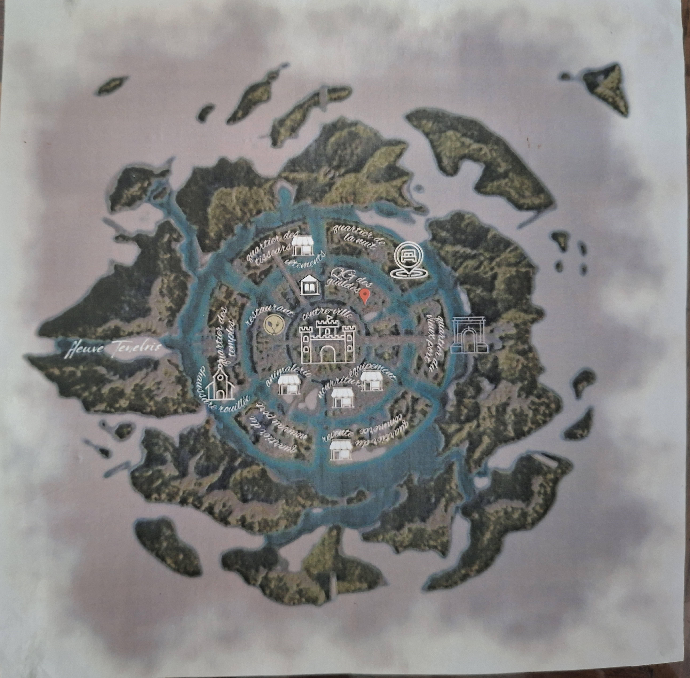

Outreterre est un continent continuellement sous la brume. Créé par la déesse maléfique Loth il y a de celà bien longtemps pour offrir asyle à ceux qui se faisaient persécuter sur la Terre céleste, Outreterre abrite aujourd'hui une grande variété de population, allant de l'elfe au tieflin, en passant par les nains, les mages, ... La capitale est Lothelle, du nom de la déesse Loth. C'est une ville construite en cercle, particulièrement influencée par le fleuve qui y passe, le Ténébris. On y trouve de nombreuses auberges, mais aussi des temples et une grande école de magie. Cependant, ce qui fait de Lothelle la capitale est probablement le fait que les différentes guildes qui dirigent dans l'ombre le continent entier se trouve souvent ici, à l'abris des regards, dans les ruelles les plus discrètes. On y retrouve notamment la guilde de Pymkins. Les aventuriers y passent quelques nuits, pour en apprendre plus sur ceux qui en veulent aux Outreterriens. De nombreuses mésaventures s'accablent sur eux durant leur séjour, certaines liées à un mystérieux coffre dans leur chambre à l'auberge, qui cache un lourd secret dont Pymkins semble connaître les plus petits détails...